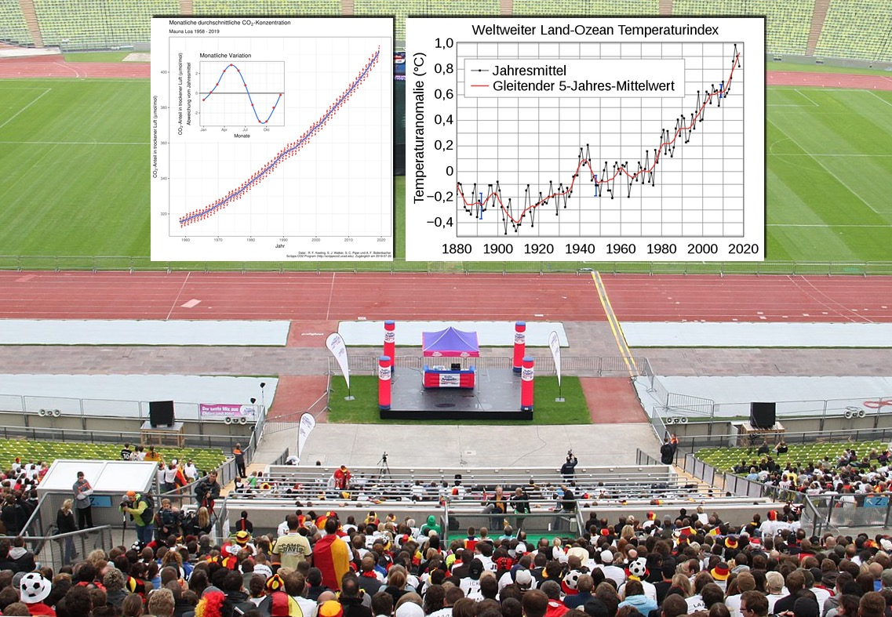

ℹ️ Dieser Artikel wurde noch nicht von fachkundigen Personen gefeedbacked, ggf. können noch inhaltliche Fehler enthalten sein.
Hey du, kurz mal Zeit?
Ja, ich weiß. Eigentlich ist jetzt Feierabend, Mittagspause, Wochenende (oder du sitzt gerade auf dem Klo mit Smartphone) und willst einfach mal den Kopf ausmachen. Schule, Ausbildung, Studium, Bewerbungen oder dein Job sind schon nervig genug, die Finanzen will man auch halbwegs hinbekommen und Spaß am Leben hier muss ja auch irgendwie drin sein auf diesem Planeten. Und ja, der ganze Klimakram ist anscheinend kompliziert. Alle labern rum, tausend Zahlen und Meinungen kursieren, - anstrengend, richtig anstrengend! Wie so eine nie endende Politik-Talkshow, bei der sich niemand ausreden lässt.🙅♂️
Bild von birgl auf Pixabay (Pixabay-Lizenz)
Aber hey! Wer im Baumarkt Dinge (halbwegs) auf Anhieb findet, Stories auf Instagram hinbekommt oder die Regeln vom Videobeweis in der Bundesliga im Detail diskutieren kann, der versteht auch den Klimakram und was zu tun ist. So kompliziert ist es nämlich gar nicht und maximal 15 Minuten reichen vollkommen aus, um das Grundproblem zu verstehen. Also auf geht's, kühles Bier aufmachen und weiterlesen:
So, was ist wirklich wichtig?
Eigentlich muss die Menschheit nur die zwei Anzeigetafeln im Auge behalten: "Monatlich durchschnittliche CO2-Konzentration" und "Weltweiter Land-Ozean-Temperaturindex". Auf diese beiden werden wir gleich näher eingehen - keine Sorge, es ist nicht kompliziert und außerdem gibt es gleich das erste versprochene Video! Also weiterscrollen zum nächsten Textabschnitt! 😉
Slick, Public Viewing Olympiastadion Muenchen 2, Infografiken hinzugefügt von Matthias Andrasch, CC0 1.0. Verwendete Infografiken: Grafik: Delorme, Mauna Loa CO2 monthly mean concentration DE, CC BY-SA 4.0 und NASA Goddard Institute for Space Studies, Global Temperature Anomaly, als gemeinfrei gekennzeichnet, Details auf Wikimedia Commons
Anzeigetafel 1: CO2 in der Atmosphäre
Die erste Anzeigetafel zeigt den aktuellen Anteil von Kohlenstoffdioxid, CO2, in der Atmosphäre unseres Planeten Erde an. Kohlenstoffdioxid, CO2, ist an sich ein natürliches Gas, welches unsichtbar und geruchlos ist und schon immer auf diesem Planeten zu finden war. Wir atmen es aus, Pflanzen können es aufnehmen und es entsteht auch bei der Verbrennung von Kohle oder Vulkanausbrüchen. Der Anteil von CO2 wird in parts per million (ppm) gemessen, die kleine Grafik oben links (Monatliche Variation) musst du erstmal nicht beachten:

{kind=link}
{kind=link}
{kind=link}
{kind=link}
Gemessen wird die CO2-Konzentration seit 1958 täglich in der „Messstation Mauna Loa" in Haiwaii, welche sich auf einem Vulkangipfel befindet und daher eine gute Lage für eine möglichst genaue Messung bietet. Wie man sieht: Seit 1958 steigt der Wert ständig, 2019 wurde (schon wieder) ein neuer Höchstwert, nämlich 415 parts per million, gemessen. (Quelle). Aber Moment, wie kommt jetzt die Anzeigetafel überhaupt zustande mit diesen "parts per million"? Kann man das wirklich so genau messen, wie viel Gas in unserer Atmosphäre rumschwirrt? Und was war denn vor 1958, wie viel CO2 war da in der Atmosphäre? Hier kurz mal aufpassen, die Birne einschalten und das Video bis Minute 3:40 schauen:
Video: ARD/Wetter vor Acht, nicht unter freier Lizenz
Okay, und wo ist das Problem? Das chemische Element Kohlenstoff (C) als auch das Gas Kohlenstoffdioxid, CO2, sind ja Teil der Natur. Lebewesen atmen es aus, Pflanzen binden es, Kohlenstoff wird in Gesteinsschichten gespeichert, Vulkane schießen es wieder als Kohlenstoffdioxid in die Luft, etc. etc. - an sich ein ganz normaler und natürlicher Kreislauf (Bonus-Video: Der natürliche Kohlenstoffkreislauf). Wo ist das Problem?
Alles an sich kein Ding,stimmt schon, problematisch sind aber die großen (und halt eher unnatürlichen) Mengen des Gases, die bei der Verbrennung von Kohle, Öl und Gas von uns Menschen, bspw. in der Industrie, entstehen. Schon früh hatten einige Wissenschaftler:innen die These, dass sich durch diese Mehr-Menge an CO2 der Planet Erde stark aufhitzen wird. Was uns zur zweiten Anzeigetafel führt:
Anzeigetafel 2: Temperaturabweichung über die Jahre
Die zweite Anzeigetafel zeigt die durchschnittliche Erwärmung, wenn man alle Temperaturmessungen auf der Welt zusammenrechnet und noch so ein paar langweilige statistische Berechnungen macht. Im Grunde also ob es jeweils wärmer oder kälter wurde im Gesamtdurchschnitt pro Jahr, daher auch Land-Ozean-Temperatur-Index. Gibt ja nicht nur Landfläche auf der Welt, sondern Meere machen ja auch viel aus:

Grafik: NASA Goddard Institute for Space Studies, Global Temperature Anomaly, als gemeinfrei gekennzeichnet, Details auf Wikimedia Commons
Okay, upsi. Seit 1940 hat sich die Durchschnittstemperatur global gesehen also um 1 Grad erhöht. Hört sich erstmal nicht viel an, hat aber schon ordentliche Konsequenzen (später gibt es dazu noch ein Video).
Diese Temperaturabweichungen
kann man natürlich ebenso für einzelne Länder, Regionen und Städte berechnen, hier z.B. die Abweichungen in Hannover („War die Temperatur in einem Jahr wärmer als die durchschnittliche Temperatur in diesem Zeitraum, färben wir den
Streifen in Rottönen, war sie niedriger, in Blautönen.“ - Warming Stripes Tool von ZEIT Online, inspriert von Ed Hawkins):

Screenshot: Warming Stripes Tool von ZEIT Online, Screenshot nicht unter freier Lizenz
Wir sehen: Es wurde (durchschnittlich) deutlich wärmer in den letzten Jahren, weltweit als auch in Hannover, was ja irgendwie so halbwegs mittig in Deutschland liegt bspw. 😉 Und auch in Österreich sowie der Schweiz sieht der Streifen ähnlich aus: Links teils noch blau, rechts dann später durchgehend in Rottönen. Es wird wärmer.
Puh okay, fast geschafft. Noch ein bisschen Text und zwei kurze Videos, dann sind wir durch - versprochen! Also mach dir mal noch das zweite Kaltgetränk auf und ab in den Endspurt:
Warum steigen nun beide Werte auf den Anzeigetafeln?
Also. Wir messen immer mehr CO2 in der Atmosphäre, wir messen immer höhere Durchschnittstemperaturen weltweit als auch regional. Wären das alles die Kurse von Aktien, die wir gekauft haben, wäre es jetzt Zeit für den Champagner. 🍾🥂 Leider geht es um die Natur auf unserem Planeten (und auch um das friedliche Zusammenleben und die gerechte Verteilung von natürlichen Ressourcen wie Wasser und Nahrung).
Gibt es da einen direkten Zusammenhang? Nun gibt es aber auch in der Welt der Statistik aber auch sogenannte Scheinkorrelationen. Diese kann vorliegen, wenn man zwei Messdaten hat und beide zusammenzuhängen scheinen, in Wirklichkeit
beeinflusst aber eine dritte Variable die Situation (Ein schönes Beispiel findet sich hier bzgl. Eisdielen-Umsatz und Herz-Kreislauf-Problemen [sowie der
dritten Variable Temperatur])
Hat die Erhöhung vom CO2 in der Atmosphäre also nun wirklich etwas mit dem Temperaturanstieg zu tun oder beeinflusst die CO2-Konzentration die Erdtemperatur gar nicht direkt? Okay, noch mal kurz alle Konzentration sammeln und das folgende
3,5-Minuten-Video komplett durchhalten:
Video: ZDF/Terra X/Gruppe 5/Luise Wagner, Jonas Sichert, Andreas Hougardy, CC BY 4.0 (via Wikimedia Commons)
Okay, Treibhauseffekt, blöde Sache, aber eigentlich ganz easy oder? Mehr CO2 = stärkerer Treibhauseffekt = steigende Temperaturen = Erde, Mensch, Tier und Ökosysteme schwitzen und sind unter Stress 🥵🔥 (Einige Tierarten versuchen daher bereits in kältere Regionen zu flüchten: Massenflucht von Tieren an die Pole hat begonnen). Mehr zum wissenschaftlichen Nachweis des Zusammenhangs CO2<->Temperatur findet sich übrigens u.a. auf klimafakten.de.
Wir halten also fest: Der Planet Erde hat sich durchschnittlich schon um 1 Grad erwärmt. Aber ein bisschen höhere Temperaturen im Sommer kriegen wir ja auch mit Klimananlagen in Mitteleuropa irgendwie geregelt? Geht ja in anderen Ländern auch problemlos? Nunja, die Szenarien über 1,5 Grad sehen eher so aus, dass Klimaanlagen allein nicht reichen werden:
Video: Quarks 19.03.2019/WDR/Daniel Haase, nicht unter freier Lizenz
So und das war es schon. Cool, dass du so weit gekommen bist! Die Menschheit muss an sich nur schauen, dass das globale Thermometer nicht weiter steigt. Ist keine Raketenwissenschaft, oder?
Unten gibt es jetzt noch Handlungsoptionen und eine Liste weiterer Videos, falls du mal noch Bock und Zeit hast. Danke fürs Lesen und einen schönen Tag dir noch!
Bonus: Act now?
Was also tun, um die Erhitzung des Planeten zu stoppen und die krassesten Szenarien zu verhindern? Wissenschaftler:innen warnen seit Jahrzehnten und liefern immer neue Belege für die katastrophale Gesamtlage. Schon länger haben sich Politiker:innen daher international eigentlich geeinigt, die Erwärmung auf maximal 2 Grad gemeinsam zu begrenzen (Pariser Klimaziele/Pariser Klimabakommen). Große und messbare Erfolge gibt es seitdem aber nicht wirklich, sagt z.B. die Schüler:innen-Bewegung Fridays For Future. Diese fordert daher eigentlich auch nur, die abgesprochenen Klimaziele nun endlich wirklich und tatsächlich und ernsthaft und jetzt anzugehen, um die deutlich krasseren Szenarien wie 3-Grad oder 4-Grad-Erwärmung zu verhindern. Also wirklich wirklich.
Auch neue Initiativen wie germanzero fordern ein schnelles Handeln und Reagieren bis 2022, um das 1,5-Grad-Ziel zu erreichen. Die Initiative geht davon aus, dass in den nächsten 15 Jahren in Deutschland ordentlich was getan werden muss, also bis 2035 ist quasi Endspurt angesagt (Quelle: Instagram-Post von germanzero).
Ob einzelne Nationalstaaten oder die EU derzeit auf einem guten Weg sind, die Klimaziele einzuhalten, kann man u.a. beim Climate Action Tracker (EU, Schweiz, Deutschland) oder im Klimaschutz-Index einsehen, den Schweden 2019 anführte. Über die Klimaziel-Einhaltung von Österreich berichtet u.a. Der Standard. Spoiler: Vorbildlich ist da gerade keins der deutschsprachigen Länder. Es gibt also noch viel zu tun und viele Möglichkeiten, als Bürger/in mitzuwirken, um die Erhitzung der Erde zu stoppen und zu begrenzen.
Bonus: Weitere Videos
- Y-Kollektiv: Fridays For Future – SchülerInnen streiken, um die Welt zu retten
- SWR: Die Welt neu denken | Maja Göpel, Mitbegründerin von "Scientists for Future"
- NDR: Deutschland 2050: Die Zukunft und die Klimakrise (Mehrteilige Serie)
- WDR: Die unbewohnbare Erde": Klimawandel - Was kommt?
- Max Planck Gesellschaft: Der Kohlenstoffkreislauf
- Terra X: Missverständnisse zum Klimawandel aufgeklärt | Harald Lesch
- Potsdam-Institut für Klimafolgenforschung (PIK): Eine kurze Geschichte der CO2-Emissionen
- NASA Climate Change: Global temperature anomalies from 1880 to 2018
Lizenz (Weiternutzung)
Bei diesem Werk handelt es sich um ein OER (Open Educational Resource). Das Werk besteht aus mehreren Bestandteilen:
- Text: Matthias Andrasch für das Projekt OERhörnchen, Freigabe unter CC0 (Keine Autorenangabe verpflichtend bei Weiternutzung der Textinhalte. Freundliche Bitte: Bei Nachnutzung mit Veränderung bitte darauf hinweisen, dass es sich um eine abgewandelte Version handelt. Als Autor gerne einfach "OERhörnchen" angeben)
- Medieninhalte: Lizenzinformationen zu den eingebundenen Medieninhalten (Fotos, Videos, Animationen, etc.) finden sich unter dem jeweiligen Inhalt, einige Inhalte sind leider nicht unter freier Lizenz verfügbar.
- Theme: HTML5 UP, CC BY 3.0
- Quelltext: Github
Feedback gerne per Twitter-DM an @OERhoernchen (oder als Issue bei Github eintragen).